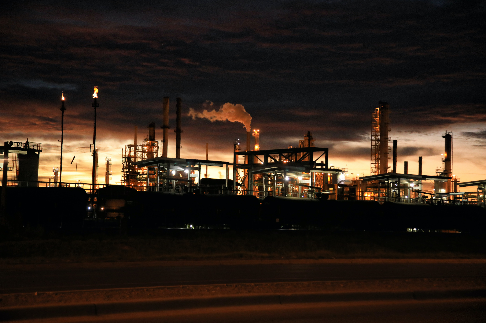
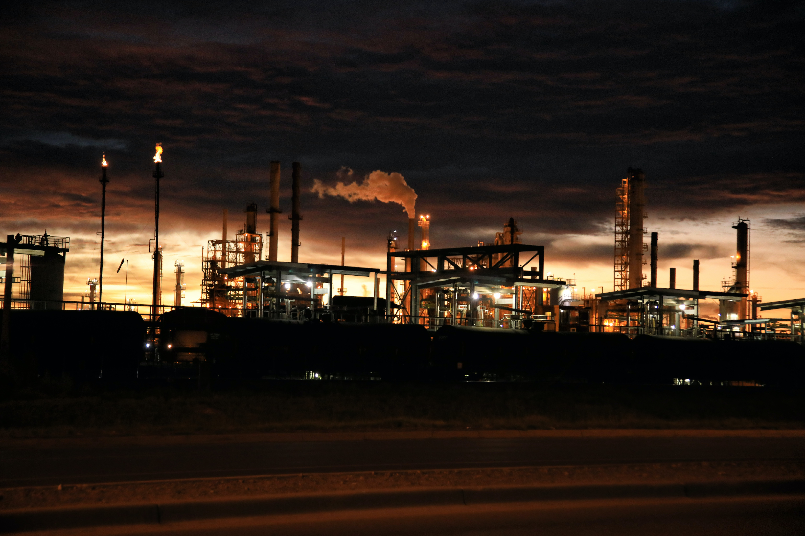

Nuestra causa

1Causa 1
la causa numero es
2Causa 2
la causa numero es
3Causa 3
la causa numero es
3Causa 3
la causa numero es
3Causa 3
la causa numero es

 


Desafíos y oportunidades para la implementación, el seguimiento y el examen del ODS 9 y sus metas:
Desafíos:
El avance de la penetración de Internet continúa en América Latina y el Caribe. Sin embargo, quedan pendientes problemas relacionados con la calidad y la equidad del acceso.
América del Sur depende de las exportaciones de recursos naturales y de manufacturas intensivas en recursos naturales como fuente de divisas. Estas últimas cumplen también un papel clave en las exportaciones deCentroamérica
El auge de las materias primas tuvo efectos positivos sobre diversos indicadores económicos y sociales, pero al mismo tiempo agudizó la “primarización” de las exportaciones, razón por la cual el fin del auge vino acompañado de una desaceleración económica.
Los países que han logrado reducir las diferencias de ingreso per cápita con las economías más avanzadas lo han hecho transformando sus patrones de especialización. Sin embargo, América Latina y el Caribe no ha sido capaz de transformar su estructura productiva con una velocidad e intensidad similar a la de economías asiáticas como China. Su patrón de especialización ha cambiado poco en los últimos 30 años y en algunos casos se han profundizado los patrones existentes.
Oportunidades:
La oferta total de energía en América Latina y el Caribe todavía depende significativamente de los hidrocarburos, a pesar del enorme potencial que la región posee en el ámbito de las fuentes renovables, que presentan, además, una notable complementariedad geográfica y estacional
La simple importación de tecnología es solo el comienzo de los procesos de aprendizaje, difusión e innovación en materia de tecnologías ambientales, ya que cada país y cada región tienen características muy específicas.